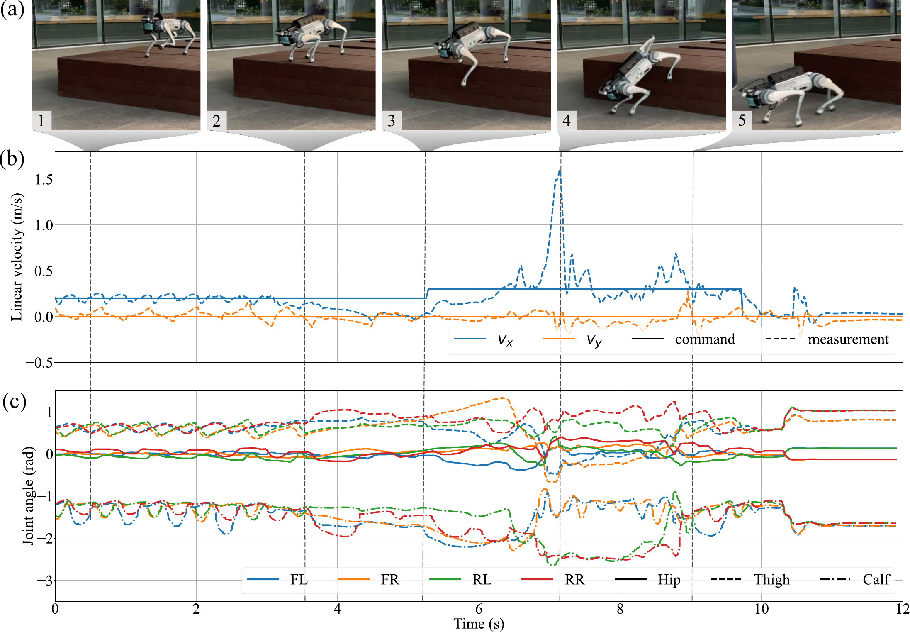
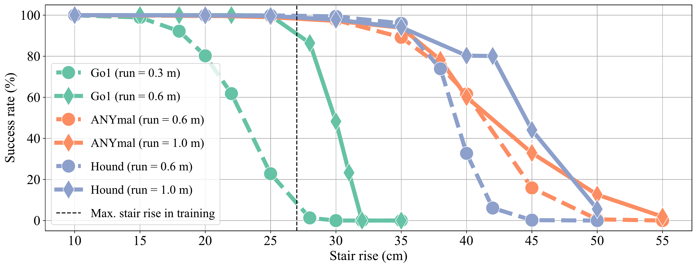

Main demonstration video showcasing DreamWaQ++ capabilities.

Agile locomotion: (a-b) stairs, (c) leaping, (d) probing, (e) gap crossing, (f) deformable terrain, (g) moving platforms, (h) 35° slopes.
Main demonstration video showcasing DreamWaQ++ capabilities.
Agile locomotion: (a-b) stairs, (c) leaping, (d) probing, (e) gap crossing, (f) deformable terrain, (g) moving platforms, (h) 35° slopes.
Quadrupedal robots hold promising potential for navigating cluttered environments. However, approaches relying solely on proprioception require front-feet contact to detect obstacles. Meanwhile, incorporating exteroception typically requires precisely modeled terrain maps.
We propose a novel method to fuse proprioception and exteroception with resilient multi-modal reinforcement learning. The result is an agile controller that traverses rough terrains, steep slopes, and high-rise stairs while remaining robust against out-of-distribution situations.

Hierarchical perception-control framework with low-level encoders and a spatio-temporal mixer for multi-modal fusion.

Exteroceptive encoder for 3D point clouds.

Learned latent space captures terrain properties.
Blind controllers can only sense stairs after collision. DreamWaQ++ anticipates and adapts its gait proactively.
S2: Race vs DreamWaQ and built-in controller.
S3: Various stair configurations.

Quantitative comparison across different stair rise/run configurations.
When facing uncertain terrain, DreamWaQ++ cautiously probes with its front leg before committing—a behavior that emerged naturally from training.
S4: Probing behavior on uncertain terrain.

DreamWaQ++ gracefully handles sensor degradation, unexpected obstacles, and novel terrain types never seen during training.
S5: Adaptation in OOD situations.

Successfully navigates slopes up to 35 degrees.
S6: Performance on extreme slopes.

Climbs obstacles larger than its leg length using emergent leaping.
S8: Overcoming high obstacles.

Demonstrated on Unitree Go1, Go2, and B2 platforms
S7: Cross-platform deployment.

Hardware configurations with various depth sensors.

Success rates across different robot platforms.

Component contribution analysis.

Impact of reconstruction objectives.
S9: DreamWaQ baseline comparison.
S10: Asynchronous stair-climbing race.
@article{nahrendra2024obstacle,
title={Obstacle-Aware Quadrupedal Locomotion With Resilient Multi-Modal Reinforcement Learning},
author={Nahrendra, I Made Aswin and Yu, Byeongho and Oh, Minho and Lee, Dongkyu
and Lee, Seunghyun and Lee, Hyeonwoo and Lim, Hyungtae and Myung, Hyun},
journal={IEEE Transactions on Robotics},
year={2025},
publisher={IEEE}
}